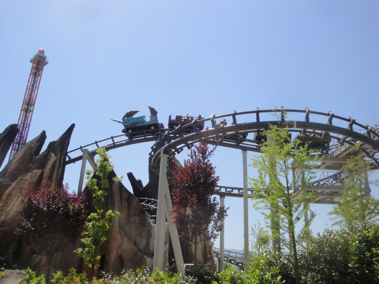

| |
Olandese Volante Review

We're here at Rainbow Magicland. Today's ride we'll be reviewing for you is Olandese Volante. The park's Vekoma Mine Train. At first, it looks like the typical 2 lift hill model. But apparently, this is a custom model. But whatever. This is way too geeky a conversation. Let's just ride. We get in, pull down the lap bar, and we're off. We roll around a turn and into lifthill #1. It's slow, it doesn't offer much of a view other than the twisted mess of track from this Mine Train. We reach the top, and head down this downward helix. We start gaining some speed, and the ride has really begun at this point. You rise up a little and go into a turn around. It's not that amazing, but you do get some laterals. We then go through a little straight track, a nice turn that we cruise through before dipping down a small drop. We go around another low to the ground turn before dipping down again and rising up before hitting some brake run. But nope. The ride is not over. This just Part #1. We then roll around a turn and climb the 2nd lifthill. This leads us into a double helix inside a nicely themed mountain (from the outside), we then dip down another small drop and get some more speed (yeah. This mine train is kind of pokey). We then go through another turnaround around the rocky theming before we head into a helix right towards the ground. And yeah, its just some turns and small dips into the brake run. It's an OK mine train. I wouldn't call it amazing or anything. But its fun enough. If you're a mine train fan or not that into large roller coasters, then this is probably the thing for you.
5/10
Location: Rainbow Magicland
Opened: 2011
Built by: Vekoma
Last Ridden: June 18, 2012
Olandese Volante Photos


|